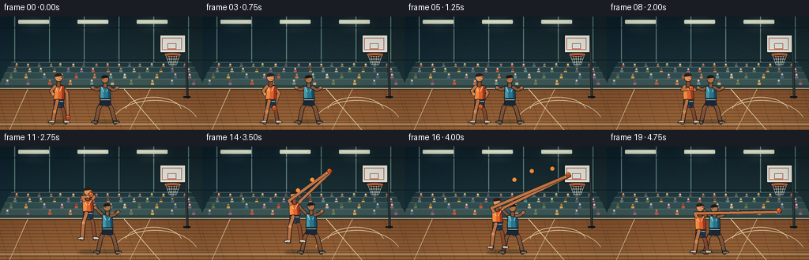
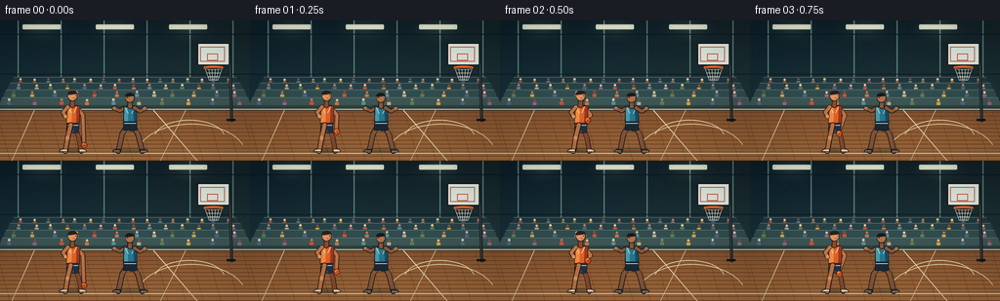
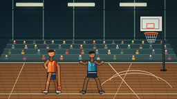
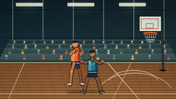
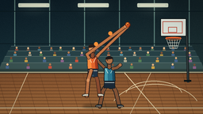
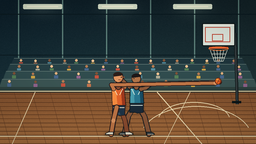
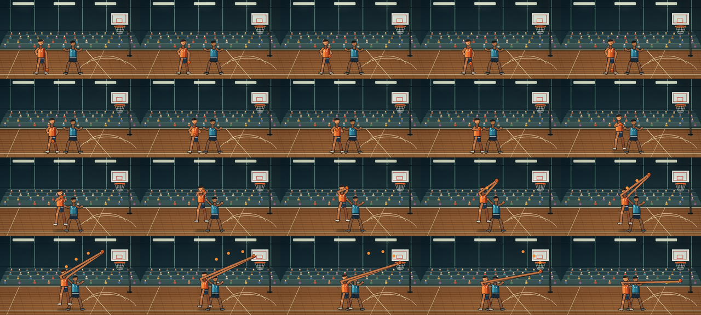

CODING AGENTS AS PIXEL WORLD MODELS
traex/DeepSeek-V4.1-Flash · instance_preservation_0035
点击播放 · 原生 RGB 像素
逐轮保存的候选
回放视频、检查图与代码变化。
每份候选均可单独播放。实际图片检查记录在下方工具轨迹中。
候选 01播放与检查图
点击播放 · 原生 RGB 像素


展开代码变化
--- 上一保存版本
+++ 本次保存版本
@@ -0,0 +1,531 @@
+from __future__ import annotations
+
+import math
+from pathlib import Path
+
+import numpy as np
+from PIL import Image, ImageDraw, ImageFilter
+
+import artifact_io
+
+
+W, H = 256, 144
+S = 4
+OUT_W, OUT_H = W * S, H * S
+N_FRAMES = 20
+FPS = 4.0
+CASE_DIR = Path(__file__).resolve().parent
+
+
+def sc(value):
+ if isinstance(value, (tuple, list)):
+ return tuple(sc(v) for v in value)
+ return int(round(value * S))
+
+
+def mix(a, b, t):
+ return tuple(int(round(a[i] * (1.0 - t) + b[i] * t)) for i in range(3))
+
+
+def rgba(color, alpha=255):
+ return tuple(color) + (alpha,)
+
+
+def gradient_background(rng):
+ y = np.linspace(0.0, 1.0, OUT_H, dtype=np.float32)[:, None, None]
+ x = np.linspace(0.0, 1.0, OUT_W, dtype=np.float32)[None, :, None]
+
+ top = np.array([17, 35, 44], dtype=np.float32)
+ middle = np.array([35, 63, 67], dtype=np.float32)
+ wall = top * (1.0 - y) + middle * y
+ wall = wall + (x - 0.5) * np.array([7.0, 4.0, -2.0], dtype=np.float32)
+
+ court_top = np.array([126, 79, 46], dtype=np.float32)
+ court_bottom = np.array([176, 119, 68], dtype=np.float32)
+ court_t = np.clip((y - 88.0 / H) / (56.0 / H), 0.0, 1.0)
+ court = court_top * (1.0 - court_t) + court_bottom * court_t
+
+ image = np.where(y < 88.0 / H, wall, court)
+ grain = rng.normal(0.0, 3.3, size=(OUT_H, OUT_W, 1))
+ image = np.clip(image + grain, 0, 255).astype(np.uint8)
+ return Image.fromarray(image, "RGB").convert("RGBA")
+
+
+def rounded_line(draw, points, color, width, joint="curve"):
+ pts = [sc(p) for p in points]
+ draw.line(pts, fill=color, width=sc(width), joint=joint)
+ radius = width * 0.5
+ for point in (pts[0], pts[-1]):
+ x, y = point
+ r = sc(radius)
+ draw.ellipse((x - r, y - r, x + r, y + r), fill=color)
+
+
+def polygon(draw, points, fill, outline=None, width=1):
+ pts = [sc(p) for p in points]
+ draw.polygon(pts, fill=fill)
+ if outline is not None:
+ draw.line(pts + [pts[0]], fill=outline, width=sc(width), joint="curve")
+
+
+def ellipse(draw, box, fill, outline=None, width=1):
+ draw.ellipse(sc(box), fill=fill, outline=outline, width=sc(width))
+
+
+def arc(draw, box, start, end, fill, width):
+ draw.arc(sc(box), start=start, end=end, fill=fill, width=sc(width))
+
+
+def draw_glow(image, center, radius, color, strength=65):
+ layer = Image.new("RGBA", image.size, (0, 0, 0, 0))
+ glow = ImageDraw.Draw(layer)
+ cx, cy = sc(center)
+ for i in range(5, 0, -1):
+ r = sc(radius * i / 5)
+ alpha = int(strength * (1.0 - i / 6.0) ** 1.7)
+ glow.ellipse((cx - r, cy - r * 0.55, cx + r, cy + r * 0.55), fill=rgba(color, alpha))
+ layer = layer.filter(ImageFilter.GaussianBlur(sc(1.8)))
+ image.alpha_composite(layer)
+
+
+def draw_background(image):
+ d = ImageDraw.Draw(image, "RGBA")
+
+ # Gym wall panels and lighting.
+ for x in range(18, 240, 44):
+ d.rectangle(sc((x, 0, x + 1, 88)), fill=rgba((94, 132, 127), 55))
+ for x in (23, 98, 173):
+ d.rounded_rectangle(sc((x, 4, x + 39, 9)), radius=sc(1.2), fill=rgba((228, 240, 218), 190))
+ d.rectangle(sc((x + 4, 6, x + 35, 7)), fill=rgba((255, 255, 231), 225))
+ draw_glow(image, (x + 19.5, 8.0), 30, (216, 245, 221), 36)
+
+ # Thin architectural beams.
+ d.line(sc(((0, 14), (256, 14))), fill=rgba((12, 29, 36), 130), width=sc(1.0))
+ d.line(sc(((0, 55), (256, 55))), fill=rgba((11, 27, 34), 105), width=sc(0.8))
+
+ # Bleachers, populated with small, softly colored spectators.
+ rows = [
+ (58, 64, 14, 242, (31, 55, 63)),
+ (64, 71, 10, 246, (39, 66, 72)),
+ (71, 79, 6, 250, (48, 77, 80)),
+ (79, 88, 2, 254, (59, 86, 86)),
+ ]
+ for index, (y0, y1, x0, x1, color) in enumerate(rows):
+ polygon(d, [(x0, y0), (x1, y0), (x1 + 3, y1), (x0 - 3, y1)], rgba(color, 235))
+ d.line(sc(((x0, y0), (x1, y0))), fill=rgba((104, 128, 125), 75), width=sc(0.6))
+
+ shirt_colors = [
+ (198, 83, 62), (207, 166, 72), (85, 143, 164), (145, 102, 146),
+ (84, 130, 89), (196, 118, 79), (72, 105, 145), (175, 173, 152),
+ ]
+ skin_colors = [(225, 178, 130), (180, 124, 84), (126, 83, 57), (244, 196, 148)]
+ rng = np.random.default_rng(8)
+ for row_index, (y0, y1, x0, x1, _) in enumerate(rows):
+ count = 16 - row_index * 2
+ for i in range(count):
+ x = x0 + 9 + i * (x1 - x0 - 18) / max(1, count - 1)
+ x += rng.normal(0, 1.2)
+ head_y = y0 + 2.3 + (i % 2) * 0.4
+ body_y = head_y + 2.0
+ skin = skin_colors[(i * 3 + row_index) % len(skin_colors)]
+ shirt = shirt_colors[(i * 5 + row_index * 2) % len(shirt_colors)]
+ ellipse(d, (x - 1.2, head_y - 1.2, x + 1.2, head_y + 1.2), rgba(skin, 225))
+ d.rounded_rectangle(
+ sc((x - 1.9, body_y, x + 1.9, min(y1 - 0.7, body_y + 3.1))),
+ radius=sc(0.6), fill=rgba(shirt, 225),
+ )
+
+ # Court apron and baseline.
+ d.rectangle(sc((0, 87, 256, 92)), fill=rgba((45, 66, 64), 235))
+ d.line(sc(((0, 91), (256, 91))), fill=rgba((221, 203, 159), 190), width=sc(1.0))
+ d.line(sc(((0, 92.2), (256, 92.2))), fill=rgba((65, 44, 32), 80), width=sc(0.5))
+
+ # Polished floor planks.
+ rng2 = np.random.default_rng(19)
+ for y in np.arange(94, 145, 4.1):
+ shade = int(rng2.integers(0, 16))
+ d.line(sc(((0, y), (256, y))), fill=rgba((84 + shade, 52 + shade // 2, 31), 46), width=sc(0.45))
+ for x in range(-40, 300, 18):
+ d.line(sc(((x, 92), (x + 14, 144))), fill=rgba((83, 51, 31), 32), width=sc(0.35))
+
+ # Perspective court markings.
+ line_color = rgba((238, 224, 183), 205)
+ d.line(sc(((0, 136), (256, 136))), fill=line_color, width=sc(1.1))
+ d.line(sc(((157, 92), (202, 144))), fill=rgba((238, 224, 183), 150), width=sc(0.8))
+ d.line(sc(((190, 92), (164, 144))), fill=rgba((238, 224, 183), 150), width=sc(0.8))
+ arc(d, (140, 106, 252, 171), 200, 340, rgba((238, 224, 183), 170), 0.85)
+ arc(d, (158, 102, 230, 138), 190, 350, rgba((238, 224, 183), 120), 0.7)
+
+ # A muted mid-court line adds depth without competing with the players.
+ d.line(sc(((35, 92), (12, 144))), fill=rgba((238, 224, 183), 105), width=sc(0.65))
+
+
+def draw_hoop(image):
+ d = ImageDraw.Draw(image, "RGBA")
+ pole_color = rgba((51, 61, 64), 255)
+ outline = rgba((13, 22, 24), 230)
+
+ # Backboard support and shadow.
+ d.line(sc(((235, 33), (237, 104))), fill=outline, width=sc(3.0))
+ d.line(sc(((235, 33), (237, 104))), fill=pole_color, width=sc(1.7))
+ d.line(sc(((232, 102), (241, 102))), fill=outline, width=sc(2.2))
+
+ # Backboard.
+ box = (202, 23, 235, 46)
+ d.rounded_rectangle(sc(box), radius=sc(1.4), fill=rgba((226, 238, 231), 245), outline=outline, width=sc(1.0))
+ d.rectangle(sc((205, 27, 230, 42)), outline=rgba((194, 71, 53), 230), width=sc(0.8))
+ d.rectangle(sc((212, 34, 223, 41)), outline=rgba((194, 71, 53), 210), width=sc(0.7))
+ d.line(sc(((203, 25), (234, 25))), fill=rgba((255, 255, 247), 230), width=sc(0.7))
+
+ # Rim and net.
+ rim_y = 49.5
+ d.line(sc(((209, 47), (228, 47))), fill=rgba((112, 38, 27), 230), width=sc(1.6))
+ d.line(sc(((209, 47.8), (228, 47.8))), fill=rgba((239, 99, 48), 255), width=sc(1.5))
+ ellipse(d, (208.5, 46.5, 228.5, 50.5), None, rgba((246, 121, 56), 255), 0.8)
+ net_color = rgba((233, 238, 225), 195)
+ top_y, bottom_y = 50.0, 61.0
+ top_xs = np.linspace(210, 227, 6)
+ bottom_xs = np.linspace(214, 223, 6)
+ for x0, x1 in zip(top_xs, bottom_xs):
+ d.line(sc(((x0, top_y), (x1, bottom_y))), fill=net_color, width=sc(0.55))
+ for frac in (0.35, 0.68, 1.0):
+ y = top_y + (bottom_y - top_y) * frac
+ left = 210 + (214 - 210) * frac
+ right = 227 + (223 - 227) * frac
+ d.line(
+ sc(((left, y), (right, y))),
+ fill=rgba((233, 238, 225), int(175 - frac * 45)),
+ width=sc(0.45),
+ )
+
+
+def draw_shadow(image, x, ground_y, width, alpha=76):
+ layer = Image.new("RGBA", image.size, (0, 0, 0, 0))
+ d = ImageDraw.Draw(layer)
+ d.ellipse(sc((x - width * 0.55, ground_y - 2.2, x + width * 0.55, ground_y + 2.2)), fill=(8, 15, 13, alpha))
+ layer = layer.filter(ImageFilter.GaussianBlur(sc(1.2)))
+ image.alpha_composite(layer)
+
+
+def draw_sneaker(d, foot, facing, color):
+ x, y = foot
+ toe = x + facing * 5.1
+ heel = x - facing * 2.2
+ outline = rgba((23, 27, 28), 255)
+ polygon(
+ d,
+ [(heel, y - 2.0), (x + facing * 1.8, y - 2.2), (toe, y - 1.1), (toe + facing * 0.5, y + 0.3), (heel, y + 0.4)],
+ color, outline, 0.7,
+ )
+ d.line(sc(((heel + facing * 1.0, y + 0.1), (toe - facing * 0.5, y + 0.1))), fill=rgba((240, 241, 225), 235), width=sc(0.6))
+
+
+def draw_shooter(d, x, jump, ball, phase):
+ skin = rgba((191, 119, 72), 255)
+ skin_light = rgba((221, 151, 99), 255)
+ skin_shadow = rgba((139, 77, 49), 255)
+ jersey = rgba((223, 100, 44), 255)
+ jersey_light = rgba((247, 142, 66), 255)
+ jersey_dark = rgba((157, 57, 30), 255)
+ shorts = rgba((31, 52, 72), 255)
+ shorts_light = rgba((51, 79, 101), 255)
+ outline = rgba((42, 30, 29), 245)
+
+ bob = 0.8 * math.sin(phase * math.pi)
+ head_y = 77.5 - jump + bob
+ shoulder_y = 87.5 - jump
+ hip_y = 105.0 - jump + (2.3 if jump < 3 else 0.0)
+ lean = 1.4 if phase < 8 else -0.4
+
+ # Rear leg and arm.
+ hip_r = (x + 2.0, hip_y)
+ knee_r = (x + 6.6 - 0.5 * jump / 22, hip_y + 13.0 - 1.5 * jump / 22)
+ foot_r = (x + 9.0, 134.0 - jump * 0.85)
+ rounded_line(d, [hip_r, knee_r, foot_r], outline, 5.1)
+ rounded_line(d, [hip_r, knee_r, foot_r], skin_shadow, 3.7)
+ draw_sneaker(d, foot_r, 1, rgba((230, 226, 207), 255))
+
+ shoulder_r = (x + 4.4, shoulder_y + 1.4)
+ if phase <= 7:
+ hand_target = (ball[0] + 0.7, ball[1] - 0.3)
+ elbow_r = (x + 10.8, shoulder_y + 9.5)
+ wrist_r = (hand_target[0] - 1.0, hand_target[1] - 2.2)
+ elif phase <= 10:
+ elbow_r = (x + 8.6, shoulder_y + 5.8)
+ wrist_r = (ball[0] + 1.0, ball[1] + 1.4)
+ else:
+ elbow_r = (x + 8.3, shoulder_y - 3.3)
+ wrist_r = (ball[0] + 1.4, ball[1] + 1.0)
+ rounded_line(d, [shoulder_r, elbow_r, wrist_r], outline, 4.5)
+ rounded_line(d, [shoulder_r, elbow_r, wrist_r], skin, 3.2)
+
+ # Torso, shorts, and jersey trim.
+ polygon(
+ d,
+ [(x - 5.8 + lean, shoulder_y), (x + 5.8 + lean, shoulder_y + 0.2),
+ (x + 7.2, hip_y - 2.0), (x - 5.8, hip_y - 1.7)],
+ jersey, outline, 0.9,
+ )
+ polygon(
+ d,
+ [(x - 5.9 + lean, shoulder_y + 1.0), (x - 2.0 + lean, shoulder_y + 1.2),
+ (x - 1.0, hip_y - 2.0), (x - 5.8, hip_y - 1.8)],
+ jersey_light,
+ )
+ polygon(
+ d,
+ [(x + 3.0 + lean, shoulder_y + 0.5), (x + 5.8 + lean, shoulder_y + 0.5),
+ (x + 7.1, hip_y - 2.0), (x + 4.0, hip_y - 2.0)],
+ jersey_dark,
+ )
+ d.line(sc(((x - 4.5, shoulder_y + 1.1), (x - 1.1, shoulder_y + 7.4))), fill=rgba((245, 230, 198), 220), width=sc(0.65))
+ d.line(sc(((x + 4.5, shoulder_y + 1.1), (x + 1.3, shoulder_y + 7.3))), fill=rgba((245, 230, 198), 220), width=sc(0.65))
+ polygon(
+ d,
+ [(x - 5.7, hip_y - 2.1), (x + 6.8, hip_y - 2.1), (x + 6.4, hip_y + 7.6),
+ (x + 1.2, hip_y + 8.4), (x - 1.5, hip_y + 7.3), (x - 6.0, hip_y + 7.1)],
+ shorts, outline, 0.8,
+ )
+ d.line(sc(((x - 0.4, hip_y + 4.0), (x - 0.8, hip_y + 7.4))), fill=rgba((14, 27, 42), 205), width=sc(0.7))
+ d.line(sc(((x - 5.0, hip_y + 0.2), (x + 6.0, hip_y + 0.2))), fill=rgba((241, 227, 201), 220), width=sc(0.7))
+ polygon(
+ d,
+ [(x - 1.7, hip_y + 5.0), (x + 1.2, hip_y + 5.2), (x + 2.0, hip_y + 7.5), (x - 2.1, hip_y + 7.3)],
+ shorts_light,
+ )
+
+ # Front leg.
+ hip_l = (x - 1.8, hip_y)
+ knee_l = (x - 4.9 - 0.7 * jump / 22, hip_y + 13.2 - 1.3 * jump / 22)
+ foot_l = (x - 7.3, 134.0 - jump * 0.83)
+ rounded_line(d, [hip_l, knee_l, foot_l], outline, 5.4)
+ rounded_line(d, [hip_l, knee_l, foot_l], skin, 3.8)
+ ellipse(d, (knee_l[0] - 2.0, knee_l[1] - 2.0, knee_l[0] + 2.0, knee_l[1] + 2.0), skin_light)
+ draw_sneaker(d, foot_l, -1, rgba((235, 231, 213), 255))
+
+ # Neck and head.
+ rounded_line(d, [(x, shoulder_y - 0.5), (x + lean * 0.2, head_y + 4.6)], outline, 5.3)
+ rounded_line(d, [(x, shoulder_y - 0.5), (x + lean * 0.2, head_y + 4.6)], skin_shadow, 3.8)
+ ellipse(d, (x - 5.0 + lean * 0.2, head_y - 5.2, x + 5.0 + lean * 0.2, head_y + 5.2), skin, outline, 0.8)
+ ellipse(d, (x - 4.5 + lean * 0.2, head_y - 4.5, x + 3.7 + lean * 0.2, head_y + 3.9), skin_light)
+ # Short cropped hair.
+ arc(d, (x - 5.1 + lean * 0.2, head_y - 5.6, x + 4.9 + lean * 0.2, head_y + 1.0), 178, 355, rgba((43, 31, 27), 255), 3.0)
+ d.polygon(sc([(x - 4.8 + lean * 0.2, head_y - 1.0), (x - 3.7 + lean * 0.2, head_y - 4.1),
+ (x + 1.0 + lean * 0.2, head_y - 4.8), (x + 3.2 + lean * 0.2, head_y - 2.1)]),
+ fill=rgba((43, 31, 27), 255))
+ ellipse(d, (x + 2.6 + lean * 0.2, head_y - 0.8, x + 3.5 + lean * 0.2, head_y + 0.1), rgba((42, 30, 27), 255))
+ d.line(sc(((x + 0.1 + lean * 0.2, head_y + 2.0), (x + 2.1 + lean * 0.2, head_y + 2.1))), fill=rgba((104, 54, 39), 210), width=sc(0.45))
+ ellipse(d, (x + 5.0 + lean * 0.2, head_y - 1.2, x + 6.2 + lean * 0.2, head_y + 0.6), skin_shadow)
+
+ # Front arm.
+ shoulder_l = (x - 4.7, shoulder_y + 1.2)
+ if phase <= 7:
+ elbow_l = (x - 9.4, shoulder_y + 6.8)
+ wrist_l = (x - 7.0, shoulder_y + 11.0)
+ elif phase <= 10:
+ elbow_l = (x - 7.6, shoulder_y + 5.2)
+ wrist_l = (ball[0] - 3.0, ball[1] + 1.0)
+ else:
+ elbow_l = (x - 7.1, shoulder_y - 2.8)
+ wrist_l = (ball[0] - 2.8, ball[1] + 2.0)
+ rounded_line(d, [shoulder_l, elbow_l, wrist_l], outline, 4.7)
+ rounded_line(d, [shoulder_l, elbow_l, wrist_l], skin, 3.3)
+ ellipse(d, (wrist_l[0] - 1.8, wrist_l[1] - 1.8, wrist_l[0] + 1.8, wrist_l[1] + 1.8), skin_light)
+
+
+def draw_defender(d, x, phase):
+ skin = rgba((137, 88, 58), 255)
+ skin_light = rgba((173, 115, 73), 255)
+ jersey = rgba((40, 119, 146), 255)
+ jersey_light = rgba((70, 157, 177), 255)
+ jersey_dark = rgba((24, 77, 103), 255)
+ shorts = rgba((26, 42, 57), 255)
+ outline = rgba((24, 30, 34), 250)
+
+ contest = max(0.0, min(1.0, (phase - 9.0) / 4.0))
+ land = max(0.0, min(1.0, (phase - 14.0) / 3.0))
+ lift = 3.2 * math.sin(contest * math.pi * 0.5) * (1.0 - land * 0.75)
+ sway = 0.55 * math.sin(phase * 0.72)
+ x += sway
+ head_y = 79.5 - lift
+ shoulder_y = 88.5 - lift
+ hip_y = 105.5 - lift * 0.45
+
+ # Wide stance.
+ for side, knee_x, foot_x in ((-1, x - 8.3, x - 12.0), (1, x + 8.0, x + 12.4)):
+ hip = (x + side * 1.5, hip_y)
+ knee = (knee_x, hip_y + 11.0)
+ foot = (foot_x, 134.0)
+ rounded_line(d, [hip, knee, foot], outline, 5.5)
+ rounded_line(d, [hip, knee, foot], skin, 3.9)
+ draw_sneaker(d, foot, side, rgba((49, 59, 66), 255))
+
+ # Back arm extends to the shooter.
+ back_shoulder = (x - 5.0, shoulder_y + 1.1)
+ if contest > 0.4:
+ back_elbow = (x - 10.3, shoulder_y - 4.0)
+ back_hand = (x - 15.2, shoulder_y - 9.0)
+ else:
+ back_elbow = (x - 10.2, shoulder_y + 4.2)
+ back_hand = (x - 16.0, shoulder_y + 1.5)
+ rounded_line(d, [back_shoulder, back_elbow, back_hand], outline, 4.8)
+ rounded_line(d, [back_shoulder, back_elbow, back_hand], skin, 3.3)
+ ellipse(d, (back_hand[0] - 1.8, back_hand[1] - 1.8, back_hand[0] + 1.8, back_hand[1] + 1.8), skin_light)
+
+ # Torso and shorts.
+ polygon(
+ d,
+ [(x - 6.0, shoulder_y), (x + 6.1, shoulder_y + 0.3),
+ (x + 7.1, hip_y - 1.6), (x - 6.5, hip_y - 1.7)],
+ jersey, outline, 0.9,
+ )
+ polygon(
+ d,
+ [(x - 5.8, shoulder_y + 1.0), (x - 2.5, shoulder_y + 1.0),
+ (x - 2.0, hip_y - 1.9), (x - 6.0, hip_y - 1.9)],
+ jersey_light,
+ )
+ polygon(
+ d,
+ [(x + 3.2, shoulder_y + 0.4), (x + 6.0, shoulder_y + 0.5),
+ (x + 7.0, hip_y - 1.8), (x + 4.2, hip_y - 1.8)],
+ jersey_dark,
+ )
+ d.line(sc(((x - 4.7, shoulder_y + 1.1), (x - 1.7, shoulder_y + 6.9))), fill=rgba((226, 239, 227), 220), width=sc(0.65))
+ d.line(sc(((x + 4.7, shoulder_y + 1.0), (x + 1.7, shoulder_y + 6.9))), fill=rgba((226, 239, 227), 220), width=sc(0.65))
+ polygon(
+ d,
+ [(x - 6.4, hip_y - 1.8), (x + 7.0, hip_y - 1.8), (x + 7.0, hip_y + 7.1),
+ (x + 1.0, hip_y + 8.1), (x - 1.2, hip_y + 7.0), (x - 6.7, hip_y + 7.1)],
+ shorts, outline, 0.8,
+ )
+ d.line(sc(((x - 5.8, hip_y + 0.1), (x + 6.3, hip_y + 0.1))), fill=rgba((223, 235, 226), 205), width=sc(0.65))
+
+ # Head.
+ rounded_line(d, [(x, shoulder_y - 0.5), (x, head_y + 4.5)], outline, 5.4)
+ rounded_line(d, [(x, shoulder_y - 0.5), (x, head_y + 4.5)], skin, 3.8)
+ ellipse(d, (x - 4.8, head_y - 5.0, x + 4.8, head_y + 5.0), skin, outline, 0.8)
+ ellipse(d, (x - 4.4, head_y - 4.3, x + 3.5, head_y + 3.8), skin_light)
+ arc(d, (x - 4.9, head_y - 5.3, x + 4.8, head_y + 0.8), 177, 357, rgba((29, 25, 25), 255), 2.8)
+ d.polygon(sc([(x - 4.6, head_y - 1.0), (x - 3.6, head_y - 4.0),
+ (x + 1.3, head_y - 4.6), (x + 3.4, head_y - 2.0)]), fill=rgba((29, 25, 25), 255))
+ ellipse(d, (x - 2.9, head_y - 0.8, x - 2.0, head_y + 0.1), rgba((32, 27, 25), 255))
+ ellipse(d, (x - 5.1, head_y - 0.9, x - 4.0, head_y + 0.8), rgba((110, 68, 46), 255))
+
+ # Front arm reaches toward the ball handler.
+ front_shoulder = (x + 4.8, shoulder_y + 1.2)
+ if contest > 0.35:
+ front_elbow = (x + 9.4, shoulder_y + 0.2)
+ front_hand = (x + 13.7, shoulder_y - 3.4)
+ else:
+ front_elbow = (x + 10.4, shoulder_y + 4.8)
+ front_hand = (x + 15.1, shoulder_y + 1.8)
+ rounded_line(d, [front_shoulder, front_elbow, front_hand], outline, 4.8)
+ rounded_line(d, [front_shoulder, front_elbow, front_hand], skin, 3.3)
+ ellipse(d, (front_hand[0] - 1.8, front_hand[1] - 1.8, front_hand[0] + 1.8, front_hand[1] + 1.8), skin_light)
+
+
+def ball_position(frame):
+ # Dribble, gather, release, and a physically legible arc toward the rim.
+ dribble = [
+ (86.0, 128.0), (88.5, 114.0), (89.8, 102.5), (91.4, 116.0),
+ (93.2, 128.5), (96.0, 114.2), (99.0, 103.0), (103.0, 93.0),
+ ]
+ gather = [(107.0, 91.0), (109.0, 83.0), (112.0, 72.0), (115.0, 61.0)]
+ flight = [
+ (121.0, 55.5), (139.0, 42.0), (161.0, 31.0), (187.0, 28.0),
+ (207.0, 36.0), (218.0, 48.0), (219.0, 64.0), (218.0, 81.0),
+ ]
+ sequence = dribble + gather + flight
+ return sequence[frame]
+
+
+def draw_ball(d, center, radius, angle, alpha=255):
+ x, y = center
+ outline = rgba((94, 39, 21), alpha)
+ base = rgba((235, 102, 39), alpha)
+ light = rgba((255, 153, 61), alpha)
+ dark = rgba((139, 49, 23), alpha)
+ ellipse(d, (x - radius, y - radius, x + radius, y + radius), base, outline, 0.65)
+ ellipse(d, (x - radius * 0.70, y - radius * 0.76, x + radius * 0.22, y + radius * 0.02), light)
+ # Rotating seam overlay.
+ dx = math.cos(angle) * radius
+ dy = math.sin(angle) * radius
+ d.line(sc(((x - dx, y - dy), (x + dx, y + dy))), fill=dark, width=sc(0.45))
+ d.line(sc(((x - dy * 0.65, y + dx * 0.65), (x + dy * 0.65, y - dx * 0.65))), fill=rgba((104, 42, 24), alpha), width=sc(0.42))
+ arc(d, (x - radius * 0.72, y - radius, x + radius * 0.72, y + radius), 75 + angle * 57.3, 255 + angle * 57.3, dark, 0.4)
+
+
+def draw_action(image, frame):
+ d = ImageDraw.Draw(image, "RGBA")
+ phase = float(frame)
+ ball = ball_position(frame)
+
+ if frame <= 7:
+ shooter_x = 74.0 + frame * 4.1
+ shooter_jump = 0.0
+ elif frame <= 10:
+ shooter_x = 103.0 + (frame - 8) * 3.2
+ shooter_jump = (0.0, 6.5, 13.5)[frame - 8]
+ elif frame <= 13:
+ shooter_x = 111.0 + (frame - 11) * 1.4
+ shooter_jump = (20.5, 22.0, 20.0)[frame - 11]
+ else:
+ shooter_x = 116.5 + (frame - 14) * 0.35
+ shooter_jump = max(0.0, 16.0 - (frame - 14) * 4.6)
+
+ defender_x = 133.0 + 1.2 * math.sin(phase * 0.58)
+ if frame >= 8:
+ defender_x += min(4.0, (frame - 8) * 0.7)
+
+ # Ground contact shadows are separate from airborne poses.
+ draw_shadow(image, shooter_x - 1.0, 134.0, 24.0 - shooter_jump * 0.2, 72)
+ draw_shadow(image, defender_x, 134.0, 32.0, 62)
+
+ # Defender is slightly deeper; shooter is the foreground subject.
+ draw_defender(d, defender_x, phase)
+ draw_shooter(d, shooter_x, shooter_jump, ball, phase)
+
+ # A restrained short trail makes the fast release readable at 4 fps.
+ if 13 <= frame <= 18:
+ for lag in (3, 2, 1):
+ previous = ball_position(max(12, frame - lag))
+ fade = int(20 + lag * 8)
+ ellipse(d, (previous[0] - 2.5, previous[1] - 2.5, previous[0] + 2.5, previous[1] + 2.5),
+ rgba((255, 147, 58), fade))
+
+ draw_ball(d, ball, 3.15, phase * 1.18)
+
+
+def add_finishing(image):
+ # A gentle vignette and warm/cool grade keep the tiny frame cohesive.
+ arr = np.asarray(image.convert("RGB"), dtype=np.float32)
+ yy, xx = np.mgrid[0:OUT_H, 0:OUT_W]
+ nx = (xx - OUT_W / 2) / (OUT_W / 2)
+ ny = (yy - OUT_H / 2) / (OUT_H / 2)
+ vignette = np.clip(1.0 - 0.16 * (nx * nx * 0.55 + ny * ny), 0.80, 1.0)[..., None]
+ arr = arr * vignette
+ arr[..., 0] *= 1.015
+ arr[..., 2] *= 0.985
+ arr = np.clip(arr, 0, 255).astype(np.uint8)
+ return Image.fromarray(arr, "RGB")
+
+
+def render_frame(frame, rng):
+ image = gradient_background(rng)
+ draw_background(image)
+ draw_hoop(image)
+ draw_action(image, frame)
+ final = add_finishing(image)
+ return np.asarray(final.resize((W, H), Image.Resampling.LANCZOS), dtype=np.uint8)
+
+
+def main():
+ rng = np.random.default_rng(20261110)
+ frames = np.stack([render_frame(frame, rng) for frame in range(N_FRAMES)], axis=0)
+ artifact_io.save(frames, CASE_DIR)
+ print(f"saved {len(frames)} frames at {W}x{H}, {FPS:g} fps")
+
+
+if __name__ == "__main__":
+ main()
可观测工具轨迹
实际执行的命令与返回图片。
命令 1exit 0
/bin/bash -c "pwd && rg --files -g '"'!*'"\\.git*' | sed -n '1,200p'"
命令 2exit 0
/bin/bash -c "sed -n '1,240p' prompt.txt"
命令 3exit 0
/bin/bash -c "sed -n '1,260p' GENERATION_RULES.md"
命令 4exit 0
/bin/bash -c "sed -n '1,260p' task_spec.json"
命令 5exit 0
/bin/bash -c "sed -n '1,260p' artifact_io.py"
命令 6exit 0
/bin/bash -c "sed -n '1,240p' player_template.html"
命令 7exit 0
/bin/bash -c "python - <<'PY'
import PIL, numpy
print('PIL', PIL.__version__)
print('numpy', numpy.__version__)
PY"命令 8exit 1
/bin/bash -c 'python generate.py'
命令 9exit 0
/bin/bash -c 'python generate.py'
命令 10exit 0
/bin/bash -c "python - <<'PY'
from PIL import Image
from pathlib import Path
# Make a 4x nearest sheet of every frame for motion inspection.
frames=[Image.open(Path('frames')/f'{i:02d}.png') for i in range(20)]
sheet=Image.new('RGB',(256*5,144*4),(24,27,31))
for i,im in enumerate(frames):
sheet.paste(im.resize((256,144),Image.Resampling.NEAREST),((i%5)*256,(i//5)*144))
sheet.save('.tmp/all_frames.png')
PY"命令 11exit 0
/bin/bash -c "python - <<'PY'
from pathlib import Path
import numpy as np
from PIL import Image
p=Path('pixels.npz')
z=np.load(p)
a=z['pixels']
print('pixels', a.shape, a.dtype, int(a.min()), int(a.max()))
files=sorted(Path('frames').glob('*.png'))
print('frames', len(files), files[0].name, files[-1].name)
for f in files:
im=np.asarray(Image.open(f))
assert im.shape==(144,256,3) and im.dtype==np.uint8
print('integrity ok')
for name in ['generate.py','pixels.npz','index.html','inspection.png','transition_check.png']:
q=Path(name)
print(name, q.exists(), q.stat().st_size if q.exists() else 0)
PY"视觉工具实际返回图片 1

视觉工具实际返回图片 2

视觉工具实际返回图片 3

视觉工具实际返回图片 4

视觉工具实际返回图片 5

视觉工具实际返回图片 6

保存候选 1 份；完成命令 11 次；可验证图片返回 6 张。原始 API 响应与完整日志保留在本地。